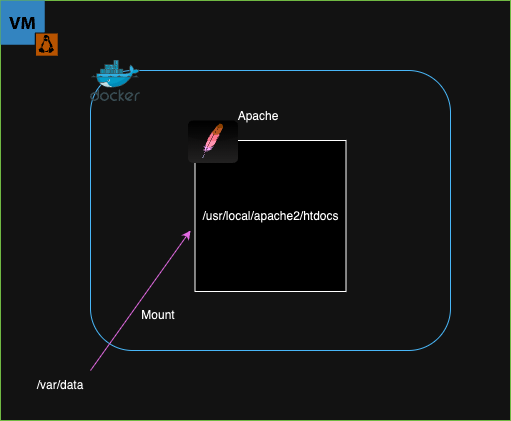
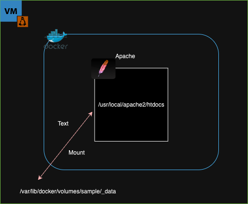

Tue, Sep 30, 2025
I'll dive into the difference between bind mounts and named volumes and show you how to use volumes for persistent storage.

# Pull docker image
$ docker pull httpd:2.4
# Run container
$ docker run -d -p 8080:80 --name apache -v /var/data:/usr/local/apache2/htdocs/ httpd:2.4
# Create index.html
$ echo "<h1>Hello World</h1>" | sudo tee /var/data/index.html
# Attach to the container's shell
$ docker exec -it apache /bin/bash
# Check disk capacity on apache container shell
$ df -h htdocs
Filesystem Size Used Avail Use% Mounted on
/dev/mapper/ubuntu--vg-ubuntu--lv 9.8G 6.5G 2.8G 71% /usr/local/apache2/htdocsBind mount is when a host directory(/var/data) is mounted into a container(/usr/local/apache2/htdocs/).
# Pull docker image
$ docker pull nginx
# Run container
$ docker run -d -p 8081:80 --name nginx -v /var/data:/usr/share/nginx/html/ nginx
# Attach to the container's shell
$ docker exec -it nginx /bin/bash
# Check disk capacity on apache container shell
$ df -h htdocs
Filesystem Size Used Avail Use% Mounted on
/dev/mapper/ubuntu--vg-ubuntu--lv 9.8G 6.7G 2.6G 73% /usr/share/nginx/htmlWhen we remove the container and create a new one, the mounted host directory (/var/data) can be reused as long as the directory is not deleted.

# Create a volume
$ docker volume create sample
# Show a list of volume
$ dockver volume ls
DRIVER VOLUME NAME
local sample
# Show information of sample volume
$ docker volume inspect sample
[
{
"CreatedAt": "2025-09-30T10:44:47Z",
"Driver": "local",
"Labels": null,
"Mountpoint": "/var/lib/docker/volumes/sample/_data",
"Name": "sample",
"Options": null,
"Scope": "local"
}
]
# Create a container
$ docker run -d -p 8080:80 --name apache -v sample:/usr/local/apache2/htdocs/ httpd:2.4
# Check a mountpoint
$ sudo ls /var/lib/docker/volumes/sample/_data
index.html Unlike bind mounts, named volumes are Docker-managed storage that can be attached to containers without directly linking to a host directory.
By understanding these options, you can ensure that your data remains safe even when containers are recreated.